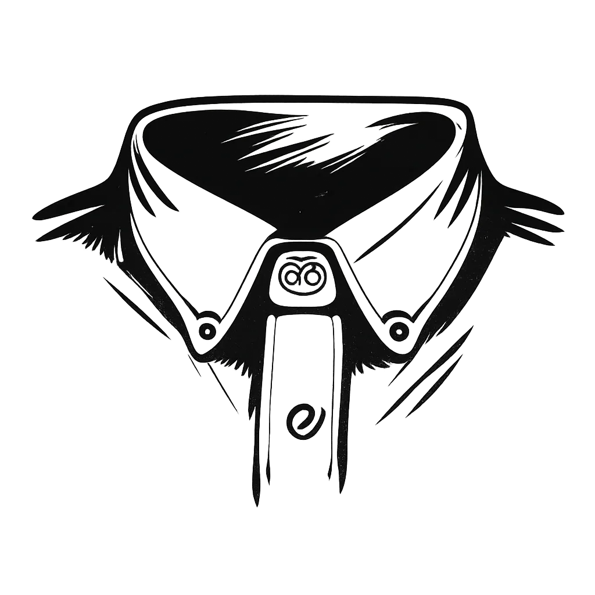
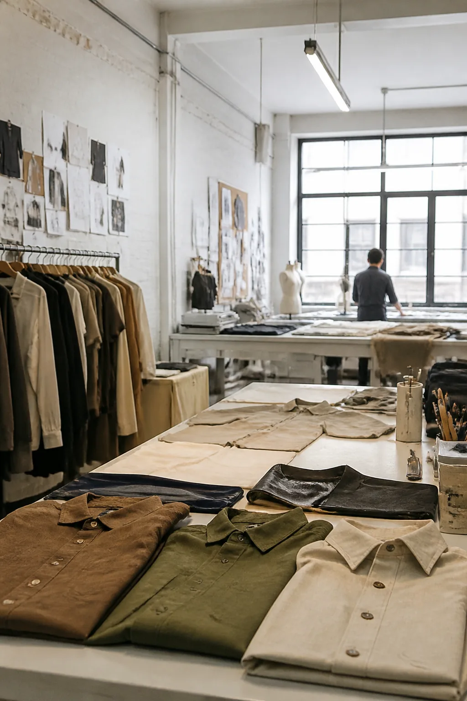
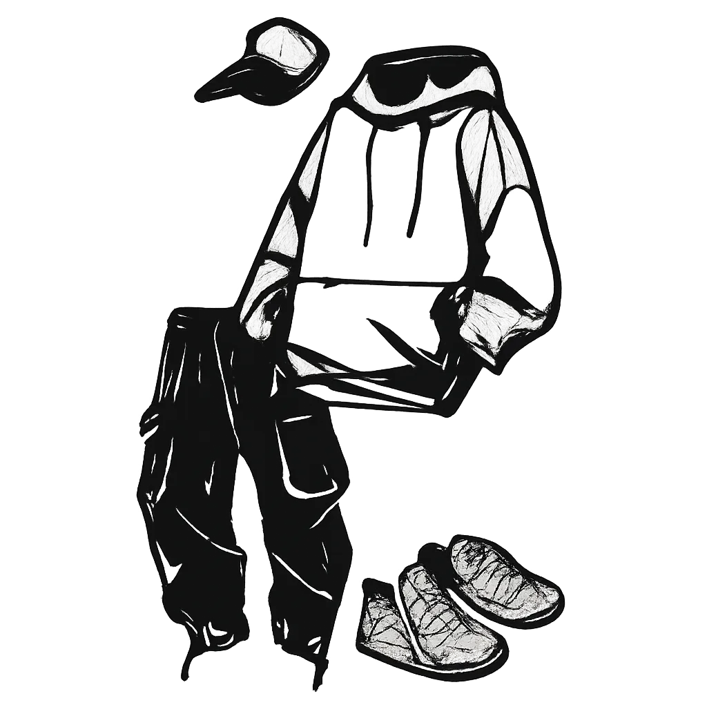
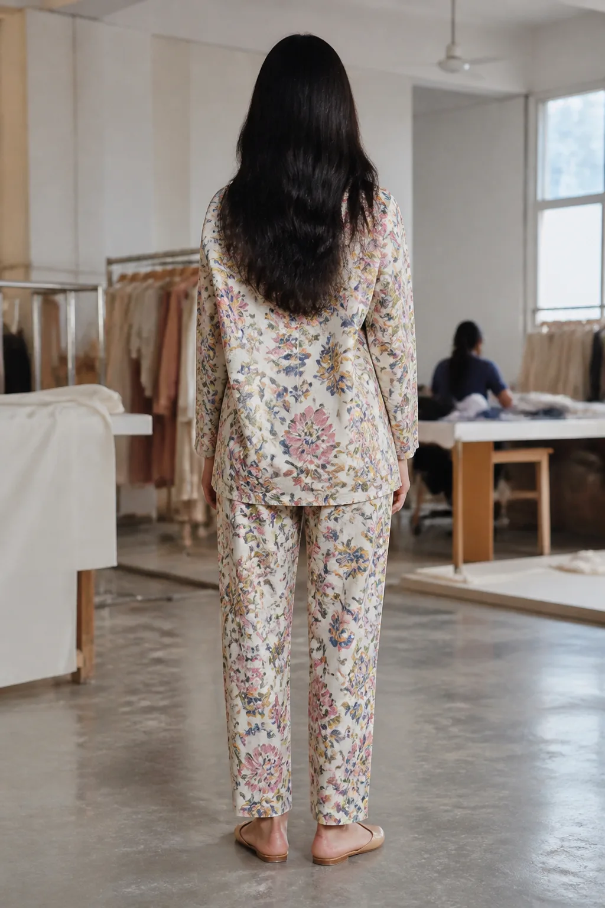
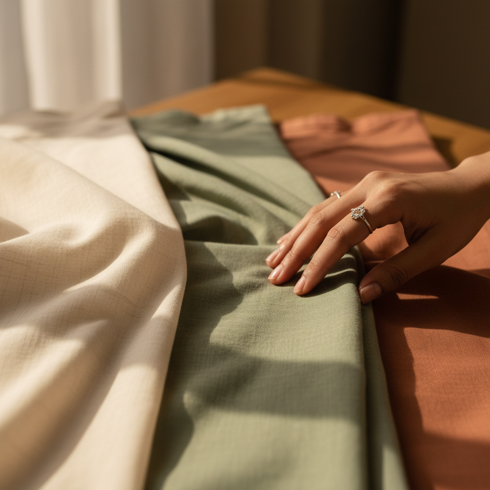
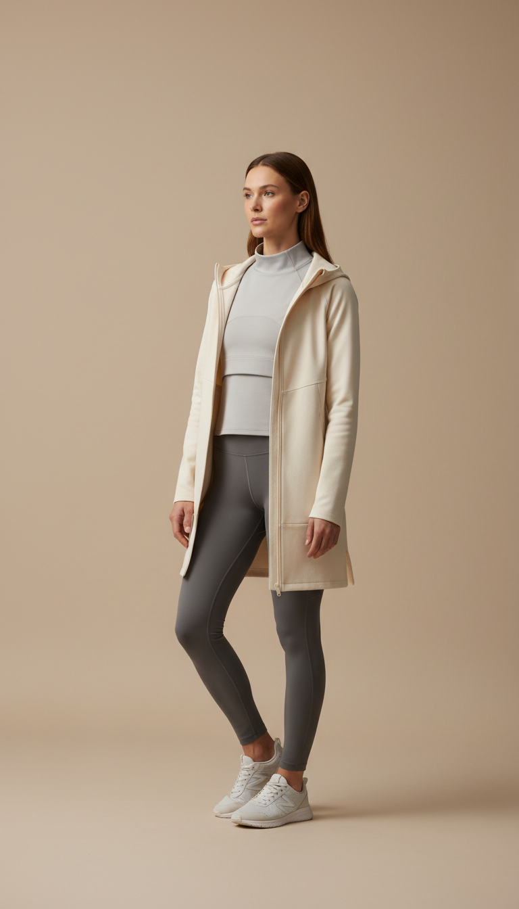
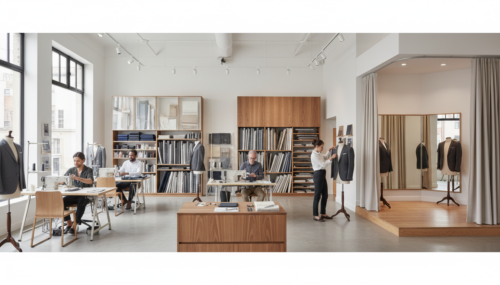

Shirts & layers

Defined silhouettes to wear alone or build an outfit around. Look closely at the collar, the cut and how a layer changes the line of a look.
Self-made in Vijayawada. Worn your way, across India.
Scroll to explore ↓
Explore the shapes, textures and details behind Girka World. Look for the piece you would reach for on an ordinary day—or the one that changes how that day feels.
Start with a shape that catches your eye. Then ask us about the details and current options.

Defined silhouettes to wear alone or build an outfit around. Look closely at the collar, the cut and how a layer changes the line of a look.
Easy shapes for long days and changing plans. Pair them with what is already in your wardrobe, then make the combination your own.

Pieces with presence for the days you want your outfit to speak first. There is no prescribed way to style one; the point is what you bring to it.
A closer look at the fabric, construction and movement that give a piece its character.




Tell us which kind of piece caught your eye and what you would like to know about fit, details or current availability. We welcome enquiries from anywhere in India.